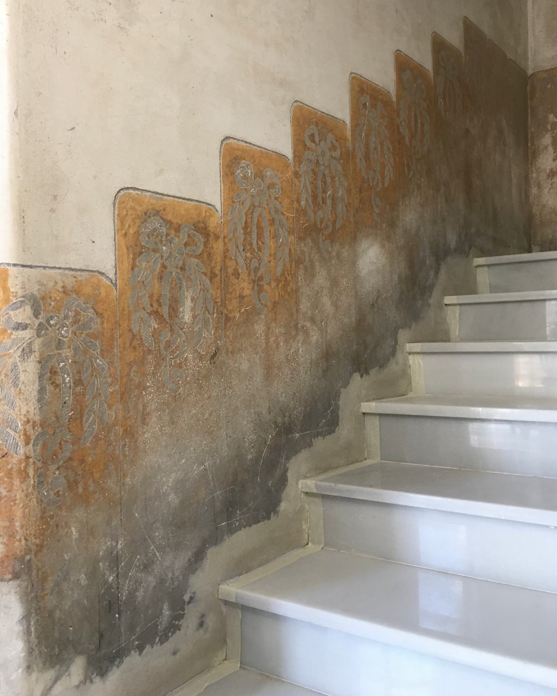
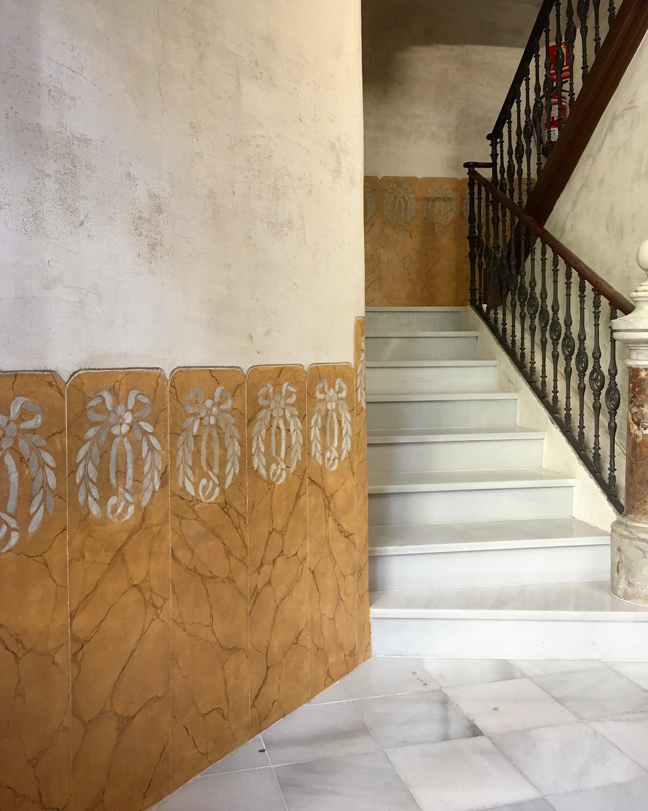
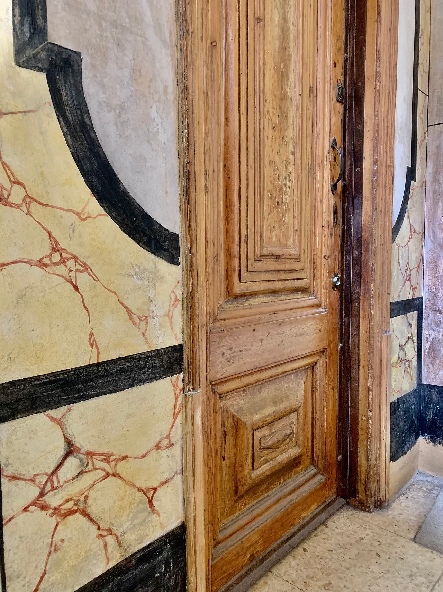

Esgrafiados y pintura mural
Esgrafiados de fachada y de interior, zócalos pintados y decoración mural. Los consolidamos, los limpiamos y reponemos el dibujo perdido con morteros de cal del mismo color y textura que el original.
esgrafiado
es·gra·fia·do · m.
Decoración mural hecha con dos capas de mortero de colores distintos: antes de que la de encima endurezca, se raspa siguiendo una plantilla y el dibujo aparece en dos tonos. En Cataluña cubre fachadas desde el siglo XVIII hasta el modernismo y el novecentismo.
Qué le pasa a un esgrafiado
Un esgrafiado es un mortero de cal de pocos milímetros sobre el muro. Casi todo lo que le ocurre tiene que ver con el agua y con lo que se le ha puesto encima con los años:
- Abombamientos y zonas huecas: las capas se despegan entre sí o del muro. Suenan a hueco al golpear y, si no se fijan, acaban cayendo.
- Lagunas: trozos de dibujo perdidos, a menudo en los bordes, junto a bajantes o donde hubo un anclaje.
- Sales y humedad: manchas blancas y polvo que se deshace; el mortero se disgrega desde dentro.
- Costras de suciedad: el contraste entre los dos tonos desaparece y el dibujo deja de leerse.
- Repintes: capas de pintura plástica que tapan el relieve y retienen la humedad. Son el daño más común y el más evitable.
En la pintura mural y los zócalos pintados las lesiones son parecidas: pérdida de adherencia de la capa pictórica, desconchados, manchas de humedad y repintes.


Cinco pasos, por este orden
Saltarse uno es la forma más segura de que el esgrafiado vuelva a fallar en pocos años. Antes de empezar hay que resolver la causa: una bajante rota o una cornisa que vierte agua sobre la fachada.
Diagnóstico y registro del dibujo
Se localizan las zonas huecas golpeando suavemente, se marcan las lagunas y las sales, y se calca el motivo allí donde se conserva completo. Ese calco será la plantilla para reponer lo perdido.
Limpieza
Según la suciedad: en seco, con agua nebulizada o con apósitos. Los repintes se retiran con cuidado para no arrastrar la capa de color de debajo. El objetivo es recuperar el contraste entre los dos tonos, no dejar el mortero «como nuevo».
Consolidación y fijación
Las zonas despegadas se fijan inyectando mortero de cal líquido; los bordes de las lagunas se sellan para que no sigan perdiendo material. Es la parte que no se ve y la que más alarga la vida del esgrafiado.
Reposición del dibujo
Se aplican las dos capas de mortero de cal, pigmentadas para igualar el color de cada una, y se vuelve a esgrafiar con la plantilla sacada del original: misma línea, misma profundidad de raspado, misma textura.
Entonación y protección
Si hace falta, unas veladuras de cal o de silicato integran lo nuevo con lo antiguo. Nada de barnices ni de pinturas que cierren el poro.
Edificio histórico junto al Liceu. La intervención incluyó trabajos en todos los interiores, en todos los esgrafiados, de las escaleras principales y del patio de luces.
Nuestro responsable técnico fue el encargado de obra de la empresa especializada que hizo el trabajo.
- Lugar
- Barcelona, junto al Gran Teatre del Liceu
- Año
- 2008
- Alcance
- Interiores, esgrafiados, escaleras principales y patio de luces
No tenemos fotos propias de esta obra y no usamos fotos de otros. Si las recuperamos, aparecerán aquí.
Cuando el dibujo es de pincel
Zócalos de escalera, cenefas, falsos mármoles y techos pintados se trabajan con la misma lógica que un esgrafiado, pero sobre una capa mucho más fina y delicada:
- Fijación de la capa pictórica que se levanta, antes de tocar nada más.
- Limpieza de suciedad y de repintes posteriores.
- Estucado de las lagunas al nivel de la pintura original.
- Reintegración del color: imitando el original o con una técnica que se reconozca de cerca, según el criterio de la intervención.
Si lo que buscas es una pintura mural nueva para una vivienda o un local, lo tratamos en pintura mural y decorativa.

Sobre esgrafiados
¿Se puede pintar encima de un esgrafiado?
No es recomendable. La pintura tapa el relieve y el contraste de los dos morteros, que es lo que hace el dibujo, y si es plástica retiene la humedad del muro. Si el esgrafiado está sucio o apagado, se limpia y, si hace falta, se entona con veladuras de cal o de silicato.
¿Y si falta medio dibujo?
Casi siempre se puede reponer. Los esgrafiados suelen repetir el motivo, así que una zona sana sirve de plantilla para la perdida. Si no queda ninguna, se buscan fotos antiguas o documentación del edificio. Lo que no hacemos es inventar un dibujo que no estaba.
¿Hace falta andamio?
En fachada, normalmente sí: hay que trabajar a la altura del esgrafiado durante días, con buena luz y con los materiales a mano. En interiores, suele bastar con un andamio móvil o una plataforma.
¿Hay que pedir permiso al ayuntamiento?
Si el edificio o el esgrafiado están protegidos, casi seguro. La propiedad o su técnico tramitan la licencia; nosotros podemos aportar la descripción de los trabajos y de los materiales.
¿Un esgrafiado que se cae?
Mándanos fotos de cerca y de lejos, y dinos dónde está el edificio. Con eso ya podemos decirte qué le pasa y cómo lo abordaríamos.